Connect the device and power
Connect the bus device and use a supply voltage that matches the actuator rating.
ESP32-S3 ROBOT CONTROLLER
Run browser-based control and motion tasks directly on the board, or use it as a sub-controller for a PC, Raspberry Pi, or Jetson. TTL, RS485, and CAN interfaces connect common robot actuators.
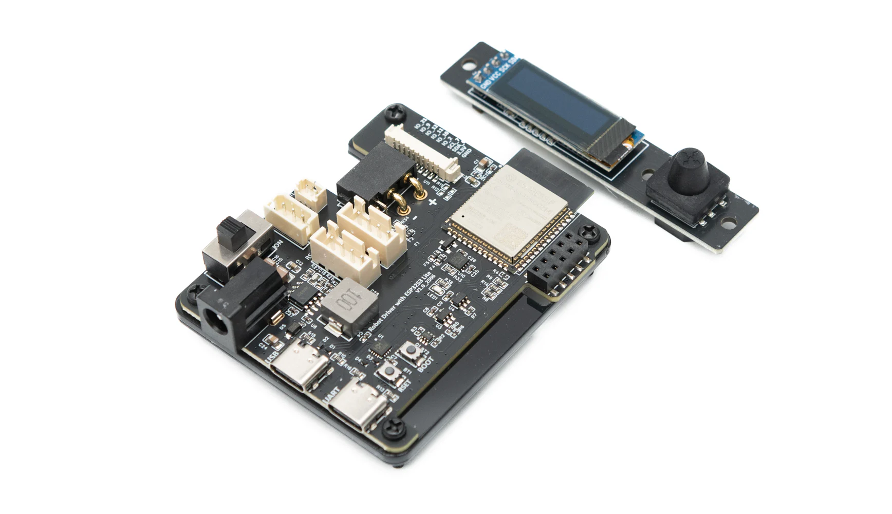
WHAT IT DOES
Robot Driver sits between a host computer and the robot actuators. It receives commands, manages bus devices, and can execute tasks without a host. Custom firmware can also move motion interpolation and kinematics onto the controller, reducing host-side workload.
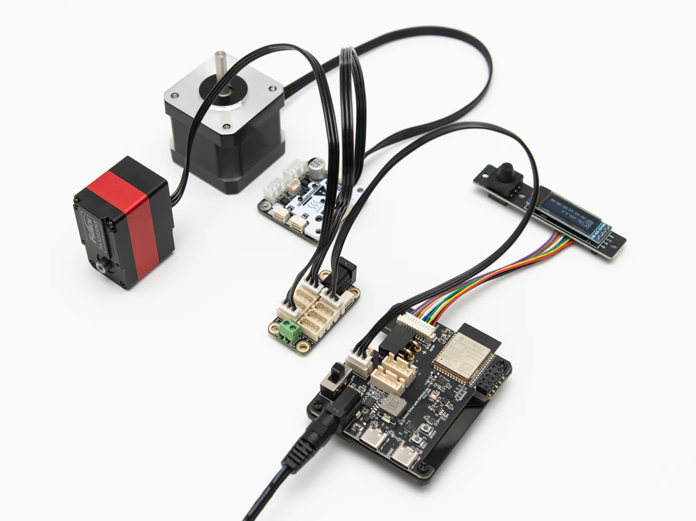
QUICK START
Connect the bus device and use a supply voltage that matches the actuator rating.
Join the controller's Wi-Fi network and open 192.168.4.1 in a browser.
Change device IDs, test bus devices, and build motion tasks from the Web interface.
USB Type-C can power the controller, OLED, and Wi-Fi, but it does not replace the actuator power supply.
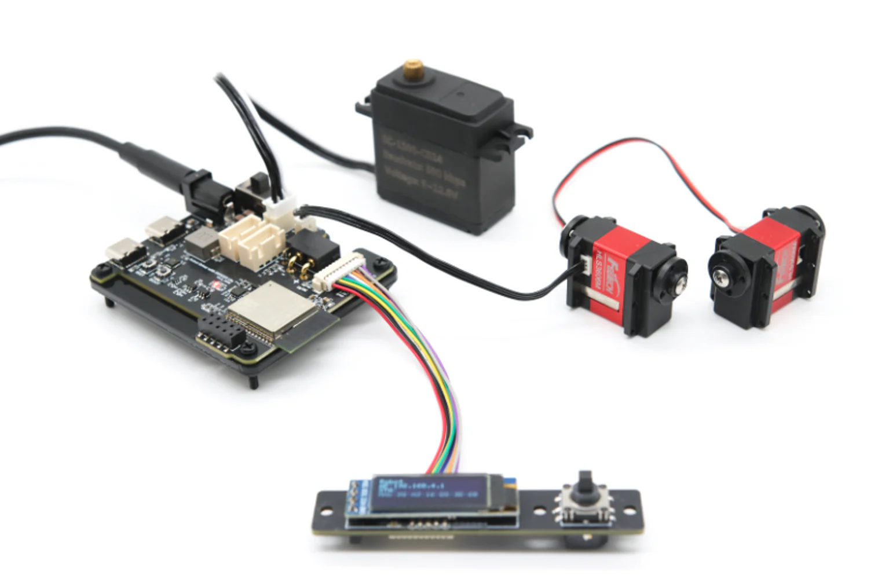
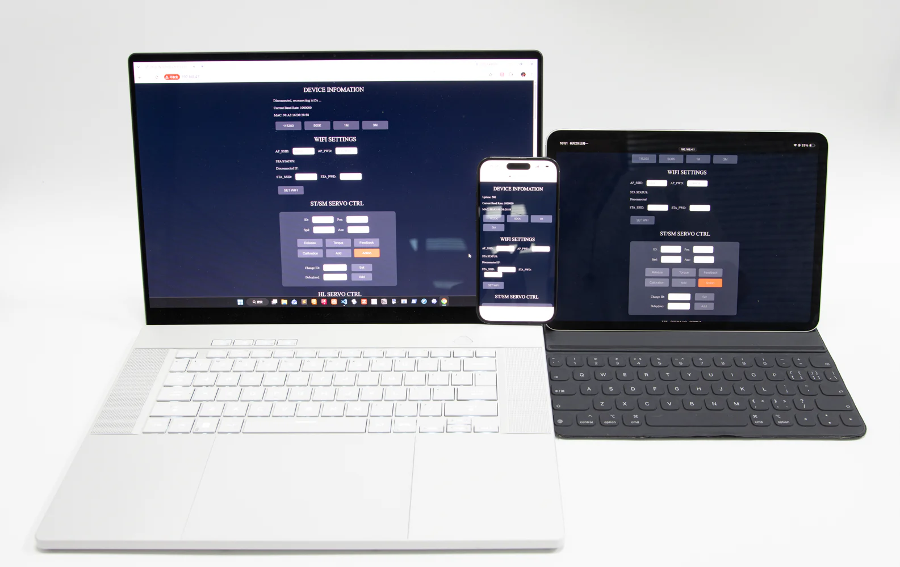
CROSS-PLATFORM WEB CONTROL
The controller starts its own Wi-Fi access point and hosts the control interface locally. A computer, phone, or tablet can connect for setup, device control, and motion task editing without installing an app.
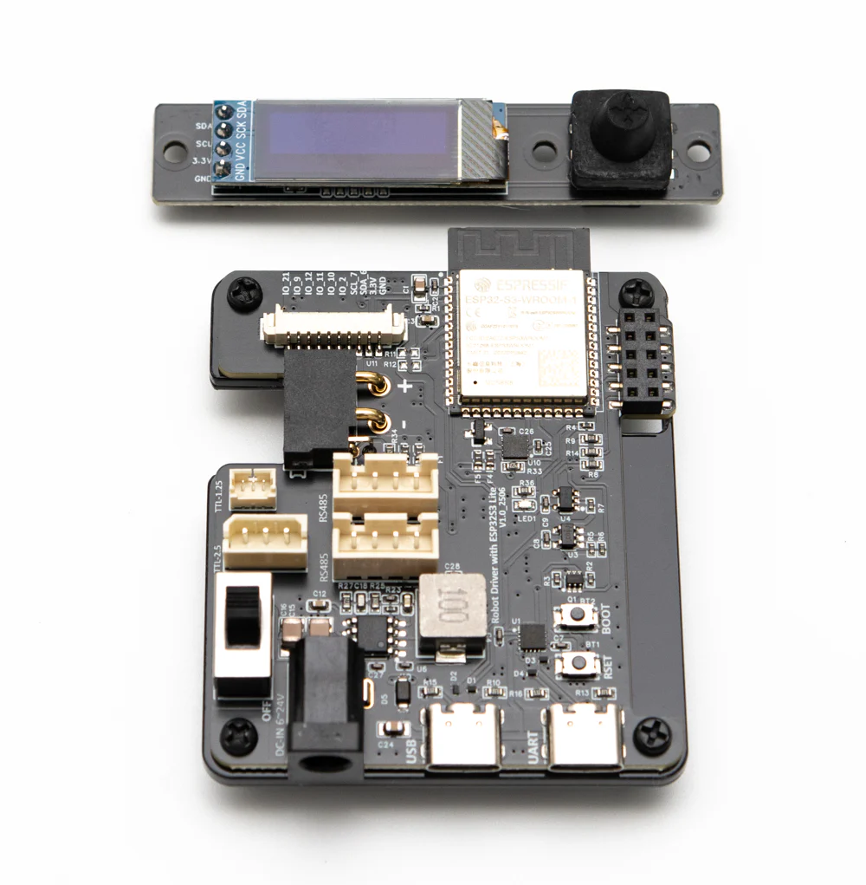
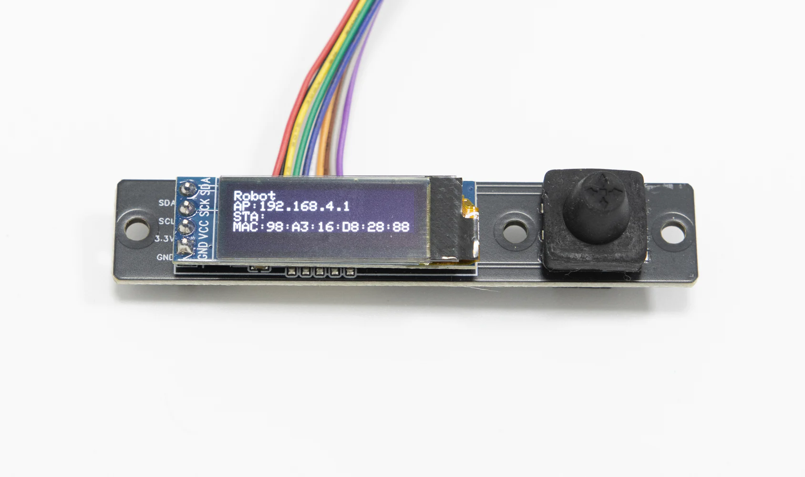
HARDWARE
ESP32-S3-WROOM-1 with native USB CDC and onboard Wi-Fi.
Single-wire TTL, RS485, and CAN.
0.91-inch OLED, five-way switch, and buzzer.
6–20V DC input, onboard 5V 5A DC-DC for Raspberry Pi HAT use, and a 3.3V LDO for external peripherals.
HOST INTEGRATION
Most projects can use Robot Driver as a self-contained sub-controller. When a robot needs custom kinematics, timing, or IO behavior, the firmware can be extended with Arduino and PlatformIO.
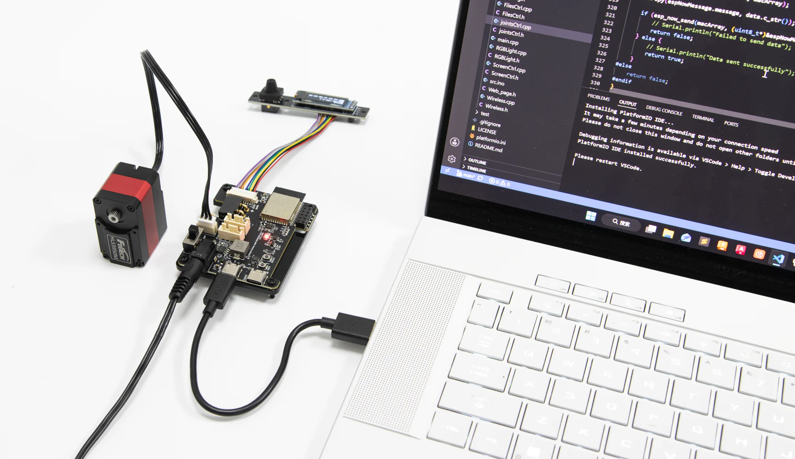
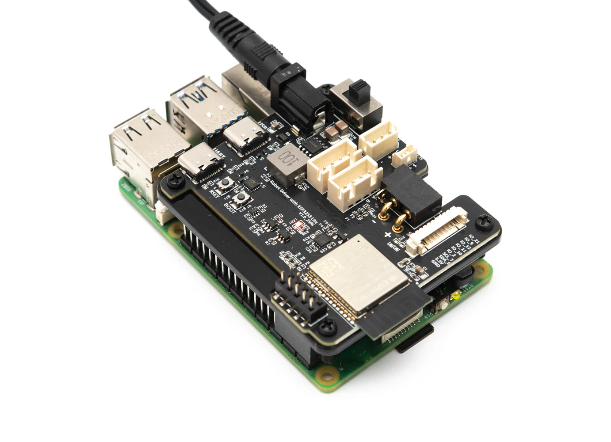
Wired communication for debugging and continuous control.
Simple setup, low-rate commands, and rapid prototypes.
Real-time wireless commands and status updates.
Embedded host-to-controller communication inside a robot.
USB CDC, HTTP, WebSocket, and GPIO UART use the same JSON command format.
Supports the Arduino framework and VS Code with PlatformIO. The onboard auto-download circuit simplifies firmware iteration.
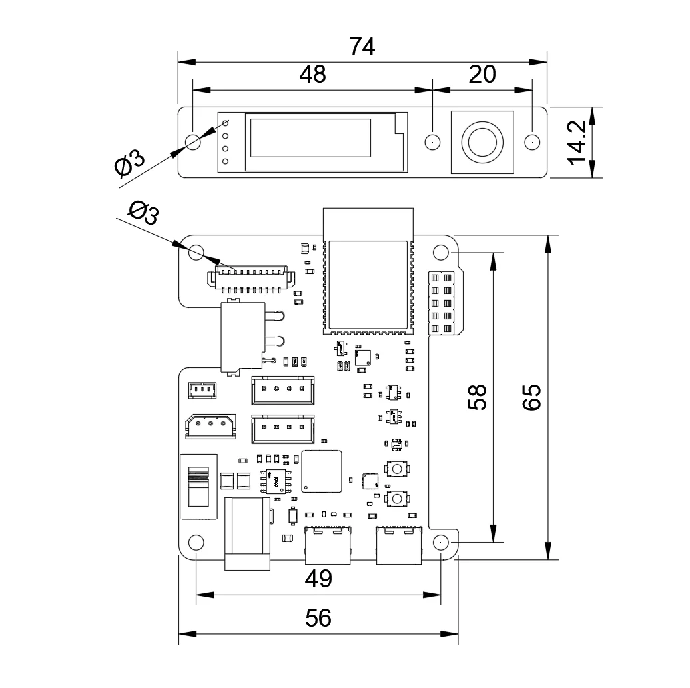
SPECIFICATIONS
PACKAGE OPTIONS
Included accessories may vary with the sales listing and shipping revision.
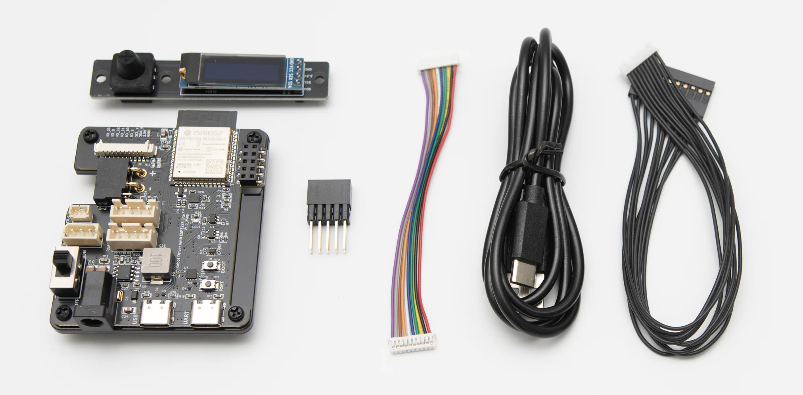
Controller board, OLED five-way control module, and basic connection cables.
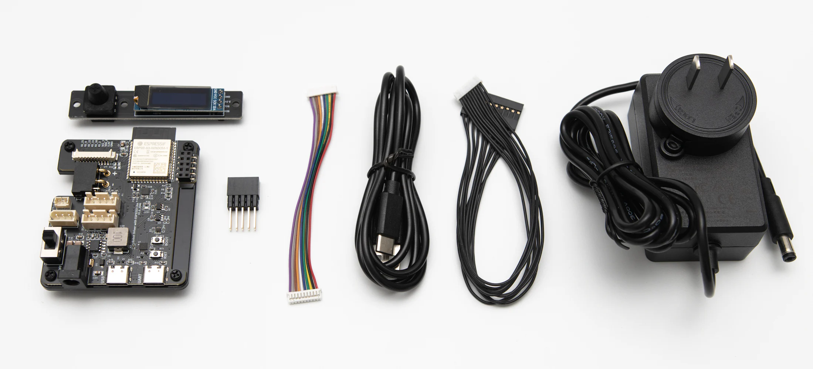
The basic package plus a power supply for a ready-to-use test setup.
DEVELOPMENT SUPPORT
Use the English LYGION Wiki for wiring, software tools, examples, and development tutorials.